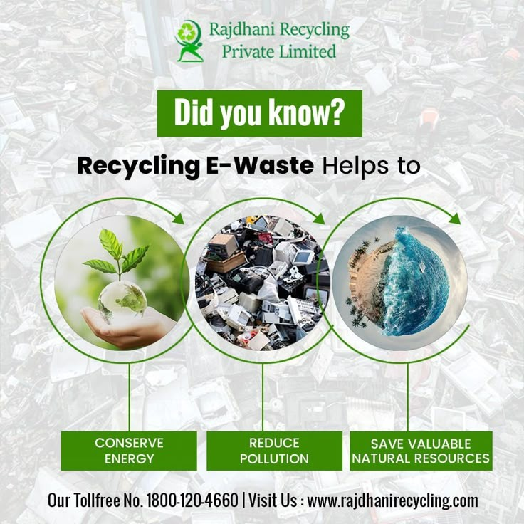
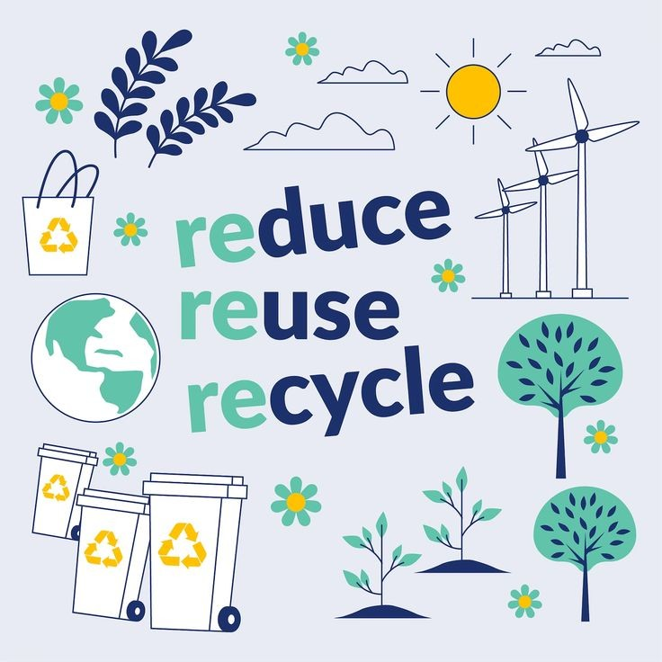
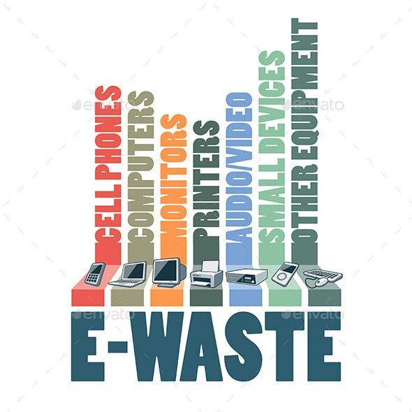
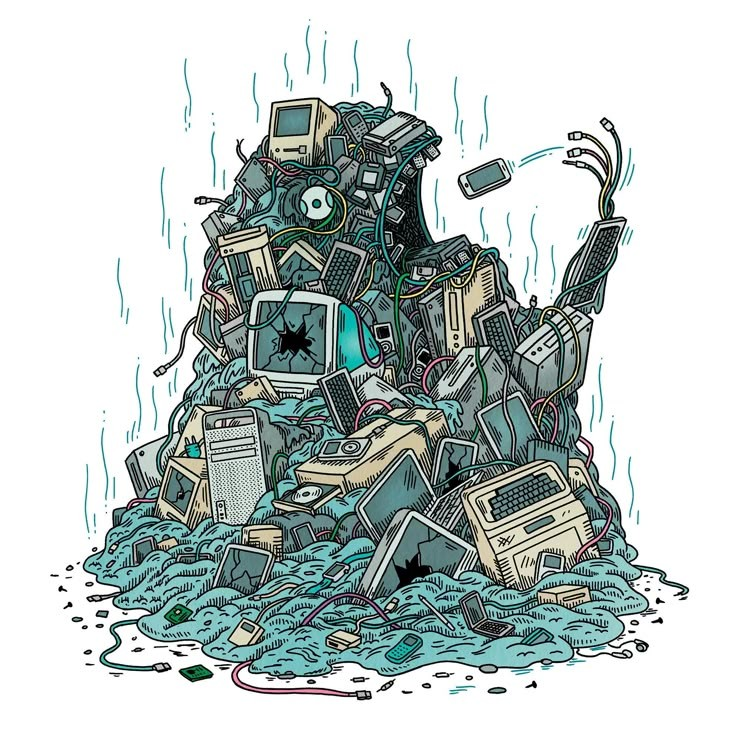

- electronic devices is crucial for conserving natural resources like metals, plastics, and glass. By properly recycling old electronics.
- we reduce the need for raw materials and decrease the energy required for manufacturing.
- This process helps preserve ecosystems and minimizes the environmental impact of resource extraction.
- Every small step towards recycling ensures a greener planet for future generations.
Read More

- Improper disposal of e-waste leads to harmful chemicals seeping into the soil and water, causing long-term environmental damage.
- Proper e-waste disposal ensures hazardous substances like lead, mercury, and cadmium are managed safely, reducing pollution.
- By disposing of e-waste correctly, we protect our environment and promote healthier living conditions for communities worldwide.
Read More

- E-waste recycling is a step towards building a sustainable future.
- Allows for the recovery of valuable materials and reduces the carbon footprint associated with new manufacturing.
- By choosing to recycle, we support environmental sustainability and encourage responsible consumption habits.
- Device recycled is a step towards a cleaner, more sustainable world
Read More

- Electronic waste often contains precious materials such as gold, silver, and copper.
- Recycling helps recover these valuable materials, reducing the need for environmentally harmful mining activities.
- Only does this conserve natural resources, but it also provides an economic incentive for recycling industries, creating jobs and promoting a circular economy.
Read More

- Landfills are overflowing with discarded electronics that could have been recycled.
- Proper e-waste management reduces landfill waste, conserves space, and minimizes environmental hazards.
- By recycling electronics, we reduce the environmental burden, conserve resources, and help mitigate the adverse effects of waste accumulation
Read More

- Community awareness is key to effective e-waste management.
- By educating others about the importance of recycling and responsible disposal, we promote collective action.
- Communities that prioritize e-waste recycling contribute to environmental preservation and inspire future generations to adopt sustainable practices.
Read More